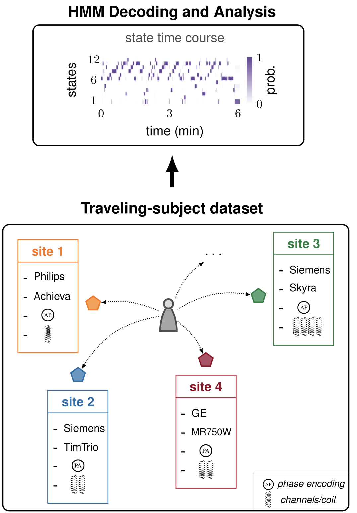

Research
Synchronization in Networks of Oscillators
 |
Synchronous neural activity enables a multitude of functions in the brain. Examples include motor coordination, sleep spindles, circadian rhythms, and large scale integration of sensori stimuli. Furthermore, synchronization can be used as a biomarker in multiple neurological disorders, and abnormal or decreased synchronized activity has been linked to neurological damage or cognitive decline due to aging. Yet, a complete characterization of synchronization phenomena in the brain is far from complete. By studying the brain as a complex dynamical system of interconnected neural populations, we have contributed towards the theoretical understanding of the synchronization of interconnected brain regions. Specifically, by abstracting oscillatory neural populations as nonlinear oscillators, we have revealed the mechanisms that enable a variety of synchronization phenomena in groups of oscillators.
|
Data-driven Models to Infer Brain Network Dynamics Fingerprints
|  | Large multi-site neuroimaging datasets have significantly advanced our quest to understand brain-behavior relationships and to develop biomarkers of psychiatric and neurodegenerative disorders. Yet, such data collections come at a cost, as the inevitable differences across samples may lead to biased or erroneous conclusions. In this line of work, we aim to validate the estimation of individual brain network dynamics fingerprints and appraise sources of variability in large resting-state fMRI datasets by providing a novel point of view based on data-driven dynamical models. Specifically, we utilize hidden Markov models to examine how diverse scanning factors in multi-site fMRI recordings affect our ability to infer the brain's spatiotemporal wandering between networks of activity.
|
Optimal Control Theory Unveils the Working Principles of Memory
 |
The brain can be studied as a network system in which nodes represent brain regions and the links connecting these regions are defined by white matter tracts. We use optimal control theory – finding control laws for a given system such that a certain optimality criterion is achieved – to predict and analyze multiple memory states from an energetic point of view. Our work has quantified the role that the anatomical organization of the brain plays in constraining its dynamical response to external current stimulation. As a proof of concept, we have tested which brain states and structural properties will efficiently improve memory encoding when stimulated. Furthermore, we have also found that subjects affected by schizophrenia show diminished stability of minimum-energy working memory states.
|
Network Control Theory Meets Neuroscience
 |
The intersection between control theory and the study of the brain as a network system has the potential to overhaul our understanding of the brain dynamical wandering between different states. The possibility to steer the state of a network system through endogenous or exogenous stimuli – controllability – is determined by the network organization. By employing control-theoretic tools, we have (i) provided prescriptive conditions for structural brain networks to be theoretically controllable, (ii) characterized the features that enable the simplification of nonlinear network systems, and (iii) demonstrated that structural brain networks possess distinct controllability profiles with respect to random networks. These methods and tools will lay the ground to the development of novel treatments and stimulation schemes to treat multiple neurological disorders.
|